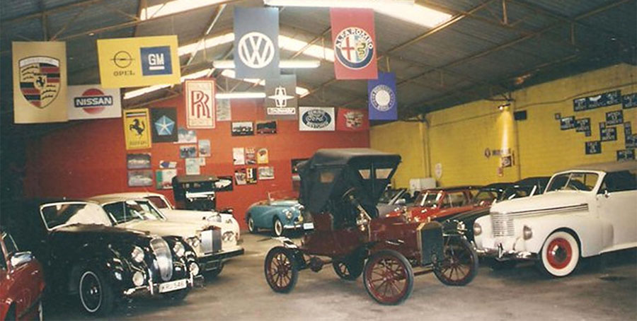
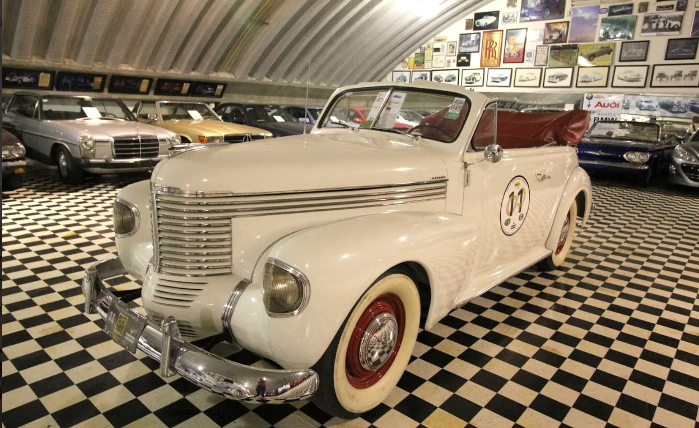

Se funda en 1968 el CLUB MEXICANO DEL AUTOMÓVIL ANTIGUO, A.C. Sección Puebla con 32 miembros y un acervo de 200 acutos de colección, ense crea la Asociación del Automóvil Antiguo Puebla, A.C.
Ya existía el Salón del Automóvil, en 1955 después de continuas presentaciones y exposiciones se establece aquí el Museo del Automóvil cuyo único fin es dar a conocer el pasado, el presente y el futuro del automovilismo en México y el mundo.
Gracias al esfuerzo y a la participación de destacados coleccionistas el Museo ha logrado reunir en la actualidad en más de 368 eventos mensuales, en los que se han exhibido más de 1,500 autos diferentes, destacándose la presentación en forma permanente de una muestra de los autos mas significativos del siglo XX teniendo varios modelos desde un Ford Modelo “T” y el Opel Kapitán del año 1939.